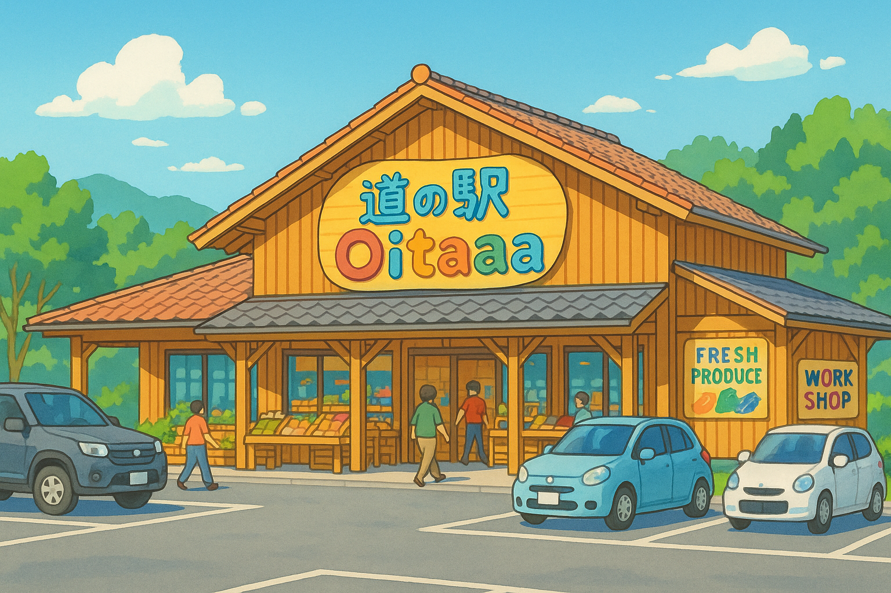
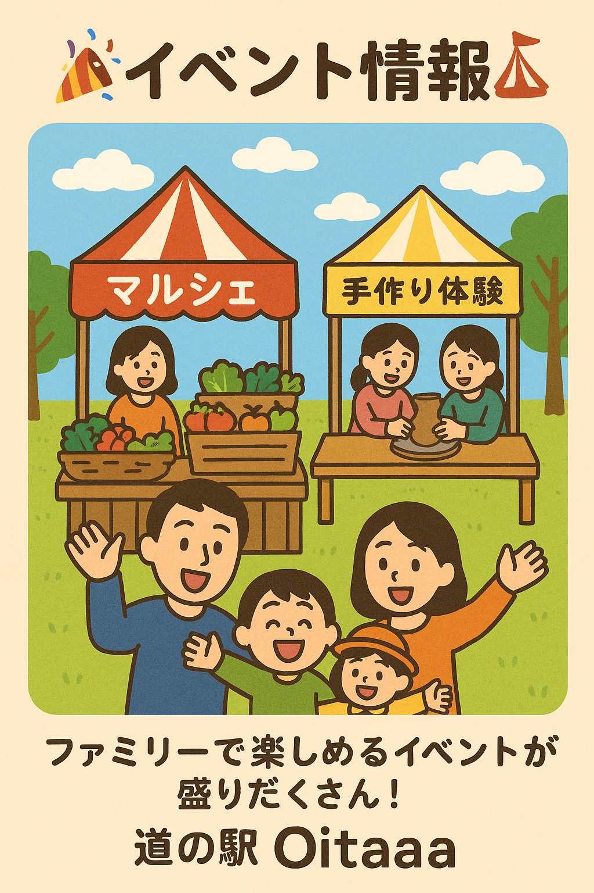

🏠 施設紹介 ♨

広々とした駐車場、清潔なトイレ、休憩スペースも完備～ 地元特産品の直売所も大人気！ 無料の足湯もあります！
🍙 ショップ＆グルメ 🥢

人気の「豆乳ソフト」や「だんご汁」は地元野菜たっぷりのほっこり料理！
地元の味噌や柚子胡椒、オリジナルパッケージのスイーツも大人気！
🎉 イベント情報 🎪

地元マルシェや手作り体験など、ファミリーで楽しめるイベントが盛りだくさん！
🗺️ アクセス 🐾
Oitaaa ICから車で5分。JR Oitaaa駅から車で約10分です。EV充電も完備！